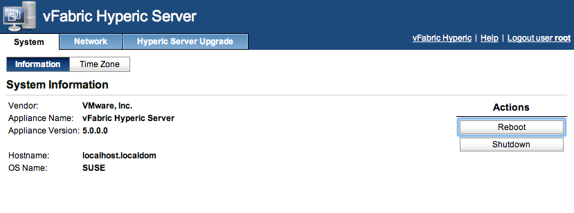
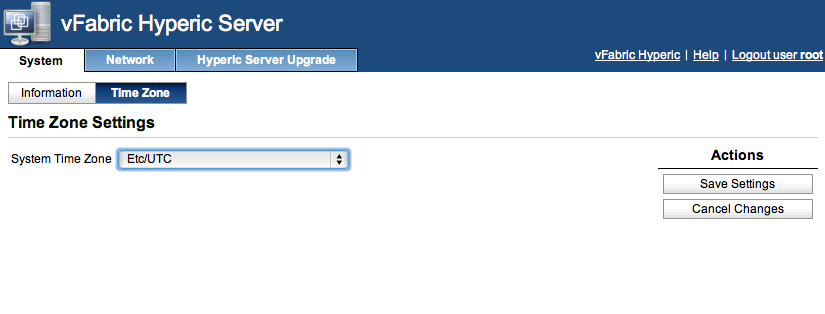
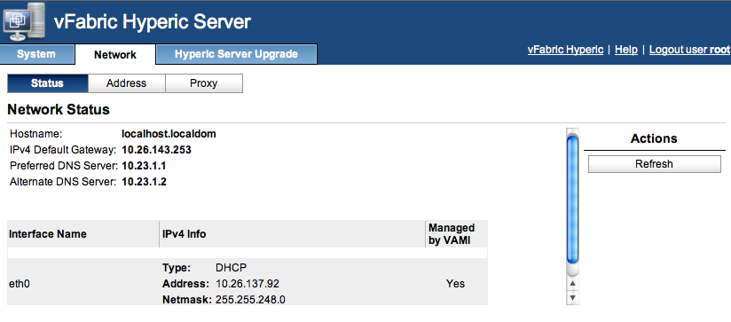
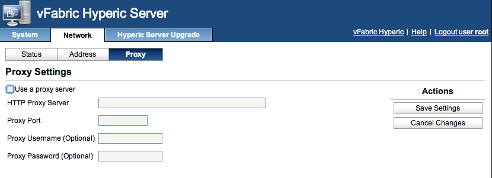

vFabric Hyperic 5.7 : Hyperic Server vApp Administration
This page last changed on Sep 27, 2012 by mmcgarry.
This page instructions for using the web-based management console for administration of the Hyperic Server vApp.
Connect to Hyperic Server vApp Management Console
Connect to the management console for the Hyperic Server vApp at this URL:
https://host:5480
where host is the IP address or DNS name of the Hyperic Server vApp host.
Log on to the management console as root, and supply the password that was defined during deployment for the Hyperic Server admin account, hqadmin by default.
View Hyperic Server vApp System Information

Set Hyperic Server vApp Timezone

View Hyperic Server vApp Network Status

Manage Hyperic vApp Network Address Settings

Configure Hyperic vApp Proxy Settings
